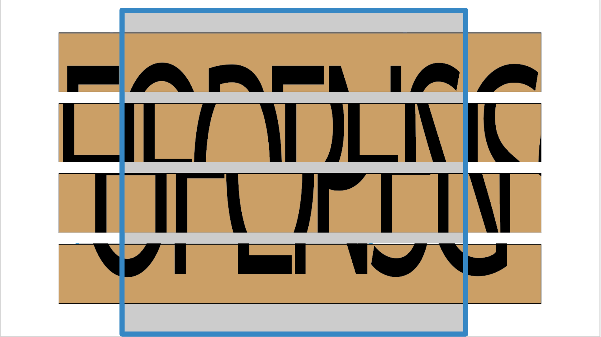

いつもと同じようにNちゃんねるを見ていた。すると気になる投稿があった・・・
助けて
1:なみ:2021/7/26/(土)20:53
寝過ごした。終点だろうけど電車の扉が開かない。窓から見えるきさらぎ駅ってどこ？
2:名無しニート:2021/7/26(土)20:54
何その駅〜？www
「きさらぎ駅」という単語に見覚えがあった。それは2004年に2ちゃんねるで都市伝説となった投稿で、女性が電車で寝過ごすと異世界に飛ばされてしまったという話だ。
まさか、またこんなことが起こるなんて、、、もし本当ならこの女性を脱出させよう、きさらぎ駅から。
3:自分:2021/7/26(土)20:55
それもしかして都市伝説のきさらぎ駅じゃない？
4:インターネットヒーロー:2021/7/26(土)20:56
もし本当にきさらぎ駅なんだとしたらなみさんは異世界に飛ばされてることになる。
5:自分:2021/7/26(土)20:57
なみさんとりあえず状況説明して
6:なみ:2021/7/26(土)20:57
電車内でこっちを見てくる男が1人いて、電車内にはその人と私しかおらず、電車の扉は変な鍵がかかっていて開きません、、、
とりあえずその人に話しかけてみようと思います。
7:自分:2021/7/26(土)20:58
なみさんダメだ。そいつは都市伝説内で女性を誘拐したやつかもしれない。まず、扉を開けて電車を出よう。
電車の外と変な鍵がわからないから写真撮って
8:なみ:2021/7/26(土)20:59
これ

9:名無しニート:2021/7/26(土)21:00
まじじゃんwww何これwww
10:インターネットヒーロー:2021/7/26(土)21:01
日本語かどうかも怪しいな
11:なみ:2021/7/26(土)21:02
全然わからないです; ;
12:自分:2021/7/26(土)21:02
俺も解いてみるよ
- この鍵を開け、なみさんを電車から出さないといけない
いつ謎の男が襲ってくるかわからないので、早く鍵を開けなくては！！